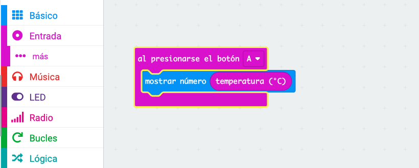

5. Medir Temperatura
Actividad
Cuando presiones el botón A, la micro:bit medirá la temperatura ambiente en grados Celsius (°C).
La medición se mostrará en la pantalla LED como un número.
Instrucciones
1. Configura el evento del botón A:
- Usa el bloque al presionar botón de la sección Entrada.
- Selecciona el botón A para que el evento se active al presionarlo.
2. Muestra la temperatura:
- Dentro del bloque al presionar botón A, agrega un bloque mostrar número de la sección Básico.
- Combina el bloque mostrar número con el bloque temperatura (°C) que se encuentra en la sección Entrada.
- El bloque temperatura (°C) medirá automáticamente la temperatura ambiente utilizando el sensor interno de la micro:bit
Bloques necesarios
Entrada > al presionar botón A
Básico > mostrar número
Entrada > temperatura (°C)
